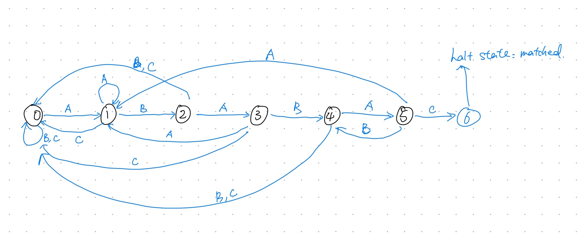
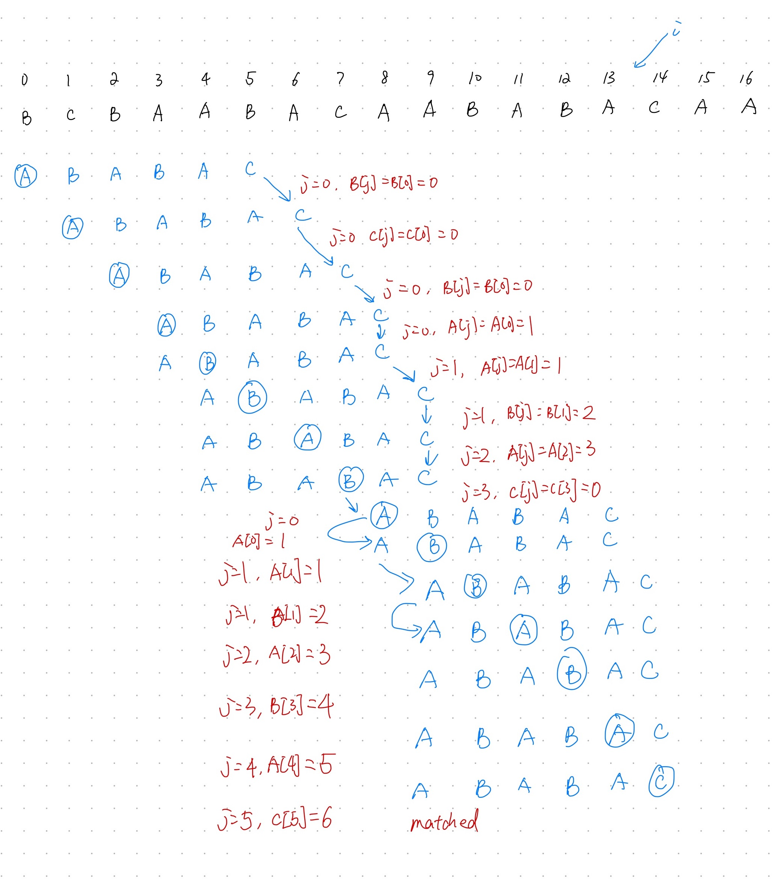
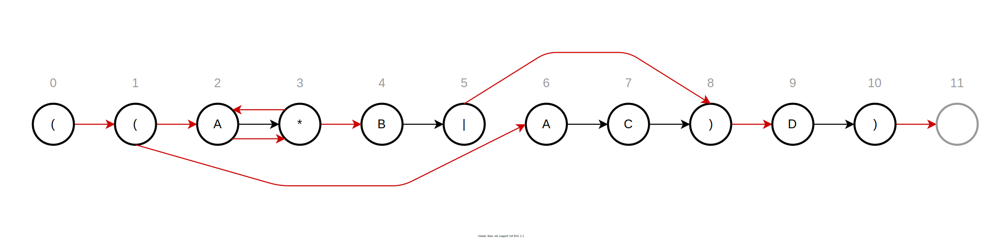

In this post, we want to study and summarize some well-known algorithms for Strings.
String Sorts
LSD
If we want to sort some items and each item is associated with a key (or ID). We could use key-indexed counting to sort, which is very efficient. This method also indicates that we could follow the same idea to sort fixed-length strings, which is called least-significant-digit first (LSD) sort.
The basic idea is to conduct key-indexed counting for w times, where w is the length of each string.
1 | public class LSD { |
Time complexity: O(W(N + R)), where N is the number of all string to be sorted, R is the radix (number of characters in alphabet) and W is the width of each string.
Space complexity: O(N + R), as we use two additional arrays.
Remember that there are some requirements when applying this method:
- Each string has the same length (certainly we can modify this method to accommodate this case, but we have other algorithms that work well for this scenario);
- We know the radix of the alphabet of these strings (in this case, 256).
MSD
LSD algorithm listed above only works for fix-length strings. Here we want to implement an algorithm that works for a general purpose: most-significant-digit-first (MSD).
We still follow the basic idea of key-indexed counting to complete this algorithm. Now, as the algorithm’s name indicates, we will start sorting based on the most significant digits. So, if we have sorted them based on the first digit, what should we do next? We can group (or split) these strings and sort in each group based on other digits, which requires a recursive algorithm.
Remember, this algorithm does not require all strings with same length. What should we do if, in a group, there are string which are shorter than others and we have reached the end of these short strings during key-indexed counting? Okay, we know that shorter strings here should be sorted first, so here is the solution:
Implement a new toChar() method that can convert from an indexed string character to an array index that returns -1 if the specified character position is pass the end of the string. Then, we just add 1 to each returned value, so get a nonnegative int that we can use to index count[]. It means we have R+1 possible character values at each string position:
0to signify the end of the string;1for the first alphabet character;2for the second alphabet character;
With all these practices above, now it is easy to write down the real code.
1 | public class MSD { |
Note that we add a “cutoff-for-small-subarrays” before the sort really begins. why do we need this?
As we can see, the method quickly divides the array to be sorted into small subarrays. But this is also a double-edged sword: we are certain to have to handle huge numbers of tiny subarrays, so we had better be sure that we handle them efficiently. Each sort involves initializing the 258 (if R = 256) entries of the count[] array to 0 and transforming them all to indices. Accordingly, the switch to insertion sort for small subarrays is a must for MSD string sort (in the code I simply use a Insertion.sort() for this part).
Please also note another pitfall of MSD sort algorithm: it can be relatively slow for subarrays containing large numbers of equal keys. The worst case for MSD string sorting is when all key are equal: the algorithm cannot make smaller subarrays after each iteration (d). In this case, out program will have to examine every character in all input strings, and the running time is linear in the number of characters in the data (like LSD string sort).
In many cases, we should treat the input strings are randomly generated. In this case, MSD string sort examines just enough characters to distinguish among the keys, and the running time is sub-linear in the number of characters in the data.
Three-way string quicksort
This algorithm borrows the idea from quick sort.
1 | public class Quick3string { |
This algorithm will always partition the array into three subarrays, which is different from MSD as MSD might generate many subarrays and many of them might be small or even empty subarrays. It can adapt well to handling equal keys, keys with long common prefixes. It will not use extra space, just like quick sort.
An interesting fact will be found when you try to compare this algorithm with standard quicksort. Indeed, one way to think 2-way string quick sort is as a way for standard quicksort to keep track of leading characters that are known to be equal. Note: no algorithm can beat 3-way string quicksort by more than a constant factor.
Tries
1 | public class TrieSTNew<Value> { |
Collecting keys
Now, we are going to implement some methods for collecting keys. The above code contains some basic operations including get and put. Now we will continue to implement some method.
1 | public Iterable<String> keys() { |
Wildcard match
Wildcard match: to implement keysThatMatch() method.
1 | public Iterable<String> keysThatMatch(String pat) { |
Longest prefix
Now we also want to method longestPrefixOf(String s) to find the longest string which is a prefix of a given string. The principle is quite similar: go down the trie with the given string; once we find a node with a non-null value, we just update the length.
1 | public String longestPrefixOf(String s) { |
Deletion
What if we want to delete a key? Apparently, the first step is to find the node corresponding to the input string and then set the value to null. However, we need to remove many nodes all the way down. This can be easily implemented with the recursive method.
1 | public void delete(String key) { |
Performance
It is easy to prove the time complexity of this algorithm. What about space?
The number of links in a trie us between RN and RNw, where w is the average key length.
TSTs
Ternary search tries (TSTs) are used to avoid the excessive space cost associated with R-way tries. In a TST, each node has a character, three links, and a value.The three links corresponds to keys whose current characters are less than, equal, or greater than the node’s character.
1 | public class TSTNew<Value> { |
The number of links in a TST build from N string keys of average length w is between 3N and 3Nw.
Substring Search
Brute-force
1 | public class StringSearch { |
Time complexity: O(MN). Below is an alternative solution.
1 | public static int search2(String pat, String txt) { |
KMP Algorithm
Here I will introduce two versions of KMP algorithms.
2D Version with DFA
As we mentioned in the brute-force substring match algorithm (the alternate one), if we find a mismatch at some point, j has to set to be 0 and i will also decremented. This is the main reason that the running time of that algorithm is high.
Is there a way which avoids decrementing the value of ‘j’. This is what KMP algorithm tries to achieve. The basic idea behind the algorithm discovered by Knuth, Morris, and Pratt is this: whenever we detect a mismatch, we already know some of the characters in the text, since they matched the pattern characters prior to the mismatch.
In KMP substring search, we never back up the text pointer i, and we use an array dfa[][] to record how far to back up the pattern pointer j when a mismatch is detected. For every character c, dfa[c][j] is the pattern position to compare with next text position after comparing c with pat.charAt(j). During the search, dfa[txt.charAt(i)][j] is the pattern position to compare with txt.charAt(i) with pat.charAt(j). Thus, dfa[pat.charAt(j)][j] is always j+1.
Once we have computed DFA, we then can easily search the match with DFA. You may ask, why we have to call it “DFA”?
In fact, “DFA” represents deterministic finite-state automation. For example, for a pattern A B A B A C, the DFA will be (we will later study how can we construct DFA):
A B C D E F
j 0 1 2 3 4 5
-----------
A |1 1 3 1 5 1
B |0 2 0 4 0 4
C |0 0 0 0 0 6Please note that here we assume there are only three characters (A, B, and C) in the alphabet. Below is the graphical representation of this DFA.

We then could easily use this to finish the matching process. The input text string is “B C B A A B A C A A B A B A C A A”:

Below is the code corresponding to the process showed in the picture.
1 | public class KMP { |
Up to now, you must feel the logic is natural and comfortable. Now, we have to know how can we construct DFA array with a given pattern string, which is much trickier and interesting.
When we have a mismatch at pat.charAt(j), our interest is in knowing in what state the DFA would be if we were to back up the next index and rescan the text characters that we just saw after shifting to the right one position (remember, i is always incremented by 1 after a match or mismatch).
What should the DFA do with the next character? Exactly what it would have done if we had backed up, except if it finds a match with pat.charAt(j), when it should go to state j+1. Certainly, this makes sense and is straightforward.
So, the question here is, what is the back up state X? before this question, we must know what exactly happens (or, say, what we should do) when backing up to state X. Here are two question to discussed about:
Q: What we actually do after backing up to state
X?
If we back up to state X after a mismatch, keep i not changed, and set j to X. The definition of X should guarantee that all chars from index 0 to j - 1 (i.e., X - 1) are matched with chars prior to i in the text string. We now, we just need to compare the char of index j (X) in the pattern string and the char of index i in the text string, this may proceed to a nigger state or a level state. Because our DFA is partially completed already, and X < j, so we can use the DFA now! which is: dfa[c][X], where c is the current text char at index i. And then, according to the definition of DFA, we get a new position for j (the result of dfa[c][X]), and i is incremented by 1.
Thus, we can copy the entry values in state X to state j, except when we see a match: dfa[pat.charAt(j)][j] = j + 1.
I know this is kind of confusing, so let’s look into 2 example. In both these examples, we use pattern string A B A B A C.
~ Example 1
Say we have completed the first column of DFA (the first column of this DFA is in fact the complete DFA for pattern string A), and we are building the second column. As mentioned earlier, we should back up (exception there is a match, and we will handle this case specially) to state X. X for the second column (j = 1) is 0 (we will explain why X is this value later).
(i)
txt string: A A C ...
pat string: A B A ...
(j)We can see that when state is 1 (j = 1) we have a mismatch. As we said previously, we need to remain the value of i, and set j to 0.
(i)
txt string: A A C...
pat string: A B A...
(j)
(X)We have backed up the X, and we have not finished our job. We could only make sure that all chars from index 0 to X - 1 is pattern string are matched (of course, it is none in this example), but how about char on index X (i for text string)? We cannot make sure it is also match.
In fact, because we have finished the first column of DFA, and j is 0 now, and you may also notice that we are actually doing a match! All of these indicate that we can use the partially completed DFA to determine a new state, which is given by dfa['A'][X]. The first A indicates the char on index i in text string. If the text string is A B ..., then use dfa['B'][X]. As we are building the second column of DFA, we might need a loop: dfa[][j] = dfa[][X] (note j here is the original y).
Continue this example. dfa['A'][X], which is also dfa['A'][0] will return 1. Thus, we set j to 1 and increment i by 1.
(i)
txt string: A A C...
pat string: A B A...
(j)~ Example 2
You may notice that the example 1 does not show that all chars from index 0 to X - 1 are matched with chars prior to i in the text string. No worry, we can give you another example.
Suppose now we have a mismatch at index j = 3, and X is 1. For example, it happens when the text string is A B A C ...
(i)
txt string: A B A C A...
pat string: A B A B A...
(j)As we discussed previously, we need to remain the value of i, and set j to X, which is 1.
(i)
txt string: A B A C A ...
pat string: A B A B A ...
(j)
(X)We can see all chars from index 0 to X - 1, in fact, A, match with txt string. So, we only need to care about the chars after X, and we can just use value of dfa[C][X] as the DFA is partially built. The value given by it is 0.
(i)
txt string: A B A C A ...
pat string: A B A B A ...
(j)I believe these two examples can help you understand the process that we build the DFA array. The key to understand the process is to be aware that state X can make sure all chars prior to index X in pattern string have will be matched if we set j to X and do not change i.
There is another way to understand X, and it will help you understand the next question.
For a given string, we define its prefix set as the set of all its prefix (exclude the string itself) and suffix set as the set of all its suffix (exclude the string itself). X will be the length of the longest string in the intersection set of the string’s prefix and suffix set. For example, for string ABA, longest string is A, and X is 1; for ABAB, X will be 2.
We have image the you are match two same strings, while sliding one to the left and another one to right. Once the overlapping matches, we get the X value. Take ABAB as an example:
← A B A B
A B A B →It should be easy to derive this representation once you have understand the two examples above.
In fact, this is also the way to compute the value of X. However, we don’t want to use this naive way, and here comes our second question.
Q: How can we compute the value of
X?
At first, let’s talk about what is the initial value of X when we just start to build the DFA array.
- If we mismatch at state
0, of course we should go back to state0(j = 0). This is totally understandable; - If we mismatch at state
1, we could only back up to0as well as we cannot stay the same state.
What if we mismatch at other positions? The method is, every time when we have finished one column of DFA, we need to update the value of X.
Say we now have finished the first three columns of the DFA array and are building the 4th column. The prefix with length of 3 is ABA, and the X value during the construction of 4th column is 1:
← A B A
A B A →
(X)Apparently, value of X is the length that we can self-matched, as showed above. Say now we also have finished the 4th column, and the prefix length should be 4. Then, it is necessary to update the value of X:
(new char added)
↓
← A B A B
A B A B →
(X) ↑
(new char added)A critical observation is, to determine the new value of X (or, say, the new length of self-matching), we only need to match the newly added char with the char on index of previous X: dfs[pat.charAt(j)][X]!
We can use DFA to do this still because X is smaller than j and the DFA is partially completed!
You will find some interesting facts about X. For example, if X is incremented after one update, it could only be incremented by 1; X might also be lower after one update (e.g., if the newly added char is c rather than B, X will become 0).
Okay, take a deep breath! We have gone through everything about KMP now, and I believe (100%) that you are confident in writing the code by yourself.
1 | public class KMP { |
1D Version with PMT
If you are a Chinese reader, you can also refer to this post for a new version which only uses a 1-D array. I will translate it into English later.
One hint I would give you is: though these two versions seem to differ a lot, they still share something (which plays a big role in KMP algorithm) in common. You will find that the the “PMT” mentioned in this version is exactly the restart state X is the 2D version!
Performance
For the second version, the time complexity is O(M + N) (O(M) for computing DFA and O(N) for search); if we do not ignore the alphabet size R, then it should be O(RM + N).
Boyer-Moore Algorithm
AS you can see, KMP algorithm is a method based on left-to-right compare. Here we want to introduce a new algorithm based on the right-to-left compare.
In this algorithm, we still have two pointers, i and j, for text string and pattern string respectively. Indexi always points to the char in the text string that should be compared with the first char of the pattern string, j initially points to the last char of the pattern string and will be decremented if pat.charAt(j) == txt.charAt(i+j).
In addition, we also implement an array right[] that gives fir each character in the alphabet, the index of its rightmost occurrence in the pattern (or -1 if the character is not in the pattern). For example, if the string is N E E D L E:
A B C D E ... L M N ...
-1 -1 -1 3 5 ... 4 -1 0 ...If there is a mismatch between pat.charAt(j) and txt.charAt(i+j), we will have one of the following three cases:
- If the character causing the mismatch is not found in the pattern, we can slide the pattern
j+1positions to the right; - If the character
ccausing the mismatch is found in the pattern ,we use theright[]array to line up the pattern with the text string so that character will match its rightmost occurrence in the pattern. To do so, we incrementibyjminusright[c]. - If the computation would not increase
i, i.e., not helping, we simply incrementiby1, just like what we do in the brute-force algorithm.
Now, the code below should be understandable and straightforward.
1 | public class BoyerMoore { |
Please note, this algorithm requires backup in the input string, i.e., we need to read previous chars again during the process. It enables us to exploit some features of right-to-left compares. In some applications where backup is not allowed, KMP would be a better candidate.
Rabin-Karp Algorithm
Unlike the two algorithms above, this algorithm will use hashing. In fact, each string of length M corresponds to an M-digit base-R number, which means we can totally treat a string as a number. We could also implement a has function to convert an M-digit base-R number to an int value between 0 and Q-1, with the help of modular hashing.
A naive solution is based on the brute-force substring matching: we could simply compute the hash value for every possible substring with length M of the text string, and compare it with the hash value of pattern string. However, it is not efficient and shows no improvement over brute-force solution.
The Rabin-Karp algorithm shows an efficient way to get the new hash value after we move i to the right position
by 1. It is easy to derive this logic with some simple maths work:
Using the notation $t_i$ for txt.charAt(i), the number corresponding to the M-character substring of text string that starts at position i is
$$x_i = t_iR^{M-1} + t_{i+1}R^{M} + … + t_{i+M-1}R^0$$
and we can assume that we know the value of $h(x_i)=x_i$ mod Q. It is also easy to get that
$$x_{i+1} = (x_i - t_iR^{M-1})R+t_{i+M}$$
1 | public class RabinKarp { |
You may notice that there is a function called check(). Why do we need this?
hashing is a good thing and we could exploit hashing for many applications, e.g., HashMap in Java. However, one main problem of hashing is that we may see hash conflict sometimes. Of course, we have the same problem in this case, as two different strings will get the same hash value. In order to resolve this issue, we can simply add an additional check when we see a hash value match, but we do not want to do that as it requires backup in the text string. Instead, we can choose a bigger value for Q to make the probability of hash conflict very small.
This algorithm is an early and famous example of Monte Carlo algorithm that has a guaranteed completion time but fails to output a correct answer with a small probability. The alternative method of checking for a match could be slow (it might amount to the brute-force algorithm, with a small probability) but is guaranteed correct, which is known as a Las Vegas algorithm.
Rabin-Karp substring search is known as a fingerprint search because it uses a small amount of information to represent a pattern.
Regex
Substring search appears in many applications in real world, but we also need regular expressions to describe patterns and use this pattern to recognize some input string. In this section, we will implement algorithms for recognizing strings with regex.
If you have experience with regex in some programming languages, you may notice that there are many complicated rules in regex, but here we will not do all of them. Instead, we will only focus on three basic operations:
- Concatenation: when we write
AB, we are specifying the language{AB}that has one two-character string, formed by concatenatingAandB; - Or: specified by
|. E.g.,A|Bspecified the language{A, B}; - Closure: close allows parts of the pattern to be repeated arbitrarily. We denote closure by placing a
*after
the pattern to be repeated.
By convention, we also use parentheses to override the default precedence rules. All patterns will be enclosed in parentheses as well.
NFA
Recall the KMP algorithm for substring search where DFA is exploited. Here we will also exploit this idea, though we might do something different.
We will build a nondeterministic finite-state automata (NFA) for a given regex string. Unlike DFA, the automata shows nondeterminism due to the nature of regex, as we are faced with more than one way to try to match the pattern.
For pattern string ((A*B|AC)D), the NFA is showed below:

The rules for an NFA is listed below:
- The NFA corresponding to an regex of length M has exactly one state per pattern chars, starts at state 0, and has a (virtual) accept state M;
- States corresponding to character from the alphabet have an outgoing edge that goes to the state corresponding to the next character in the pattern (black edges in the diagram);
- States corresponding to the meta-chars
(,),|,*have at least one outgoing black edge (red edges in the diagram). - No state has more than one outgoing black edge.
What are the the rules when we match the input string?
- If the current state corresponding to a char in the alphabet and the current char in the text string matched the char, the automation can scan past the char in the text string and take the black transition to the next state;
- the automation can follow any red edge to another state without scanning any text char.
We can use the rules to scan and recognize the input text string. As there might be multiple outgoing red edges for a state, we need to find all possible path to check the input text string.
Simulating an NFA
NFA is in similar to a directed graph and simulating an NFA is similar to DFS. We create the initial states by starting state 0 and going all the way to states pointed by read edge. In the example above, the initial state should be 0 1 2 3 4 6; if the first char in text string is A, then we update the state set to 2 3 4 7. We should keep doing this until all chars from text string are exhausted, and finally we check if the accept state is in the state set.
Note: when building digraph, we will not include the black edges into the graph.
We then can write the code out immediately with the idea. The code use Digraph and DirectedDFS class and you may refer to their implementation in Appendix.
1 | public class NFA { |
Determining whether an N-character text string is recognized by the NFA corresponding to an M-character RE takes time proportional to NM in the worst case. However, we in fact need to know the number of edges in the directed graph. We will talk about it later.
Building an NFA
Now, the problem is how we can build an NFA given a pattern string. For different operations, we might need to exploit different rules.
Concatenation
This is the simplest one. We just mentioned that we do not include black edge into the graph, so we can just simply ignore the char if the char is in the alphabet.
Parentheses
We just push the RE index of each left parentheses on the stack, and pop the left one out of the stack if we see a right one. It could be tricker than you think, as we will also push the or operator | on the stack.
Closure
[TODO]

Or
[TODO]

Appendix
Directed Graph and DFS
1 | public class Digraph { |
1 | public class DirectedDFS { |